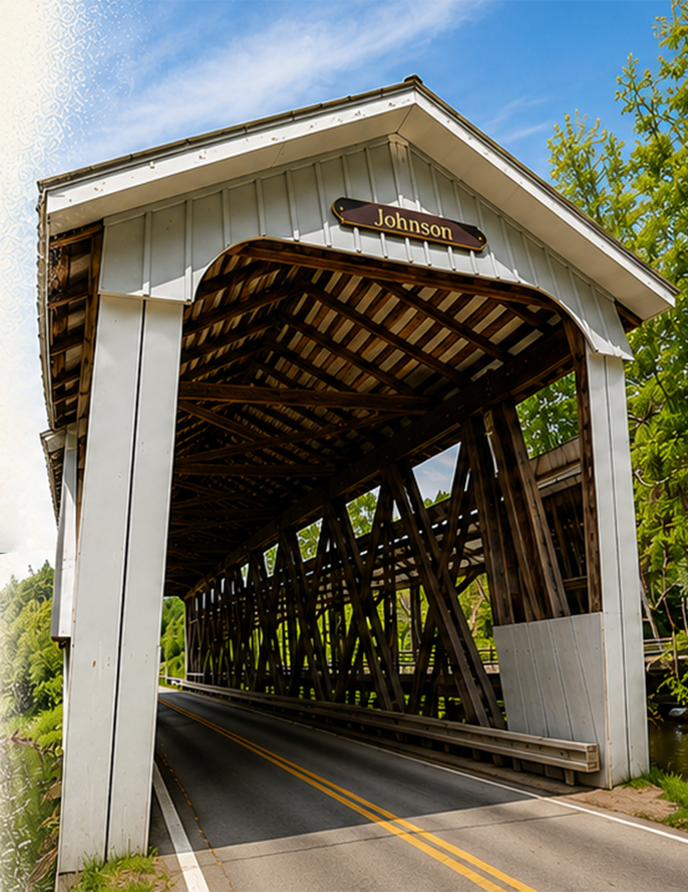

Johnson Covered Bridge
We found this bridge after driving through Clear Creek Metro Park. Instead of heading home, we stayed on the back roads to see where they would take us.

Our Visit
A few minutes after leaving Clear Creek Metro Park, we came across Johnson Covered Bridge.
It wasn't a planned destination. It was simply another quiet stop along the road, and exactly the kind of place we enjoy finding.
The creek was peaceful, traffic was light, and we spent a few minutes simply enjoying another piece of Ohio's history.
A Little History
Johnson Covered Bridge was built in 1887 by Augustus Borneman and the Hocking Valley Bridge Works.
The 98-foot Howe truss bridge crosses Clear Creek. Although it was moved a short distance during restoration, it now stands next to where it served travelers for well over a century.
Today the bridge is owned and maintained by the Fairfield County Parks District.
Nearby Discoveries
Our visit to Johnson Covered Bridge came after driving through Clear Creek Metro Park.
Hanaway Covered Bridge is also nearby, giving us another reason to return and continue exploring Fairfield County's back roads.